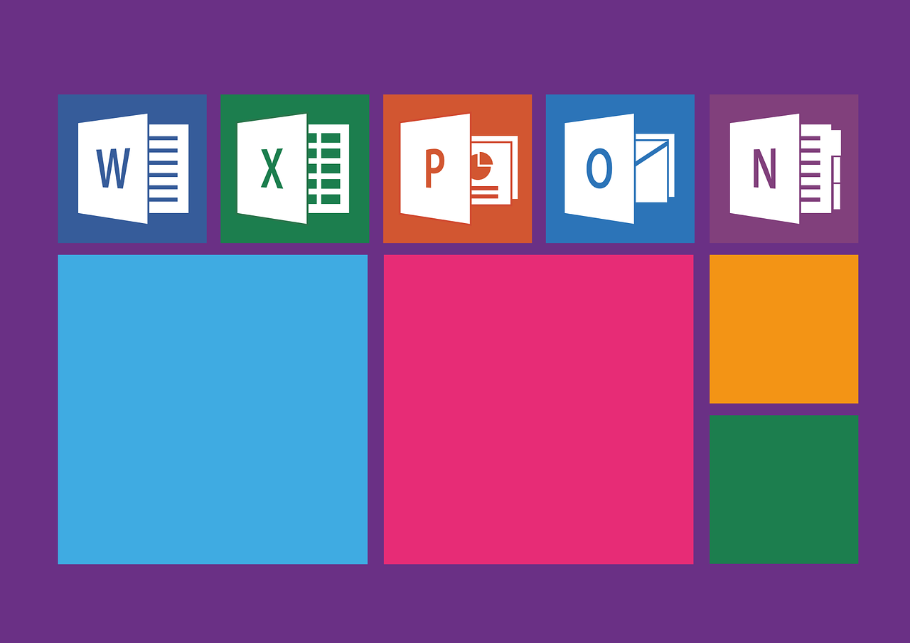

Office-Grundlagen
Office-Grundlagen sind wichtig für die Arbeit in Unternehmen. Sie helfen bei der Erstellung von Dokumenten und Präsentationen sowie bei der Kommunikation.
Office 365
Microsoft 365 umfasst die Office-Anwendungen wie Word, Excel, PowerPoint, Outlook und OneNote. Diese Anwendungen können online über einen Webbrowser oder offline über Desktop-Versionen verwendet werden. Alle Anwendungen und Dienste in Microsoft 365 sind in der Cloud gehostet, was die Zusammenarbeit und den Zugriff von verschiedenen Geräten und Standorten aus ermöglicht. Microsoft 365 bietet erweiterte Sicherheitsfunktionen, darunter Bedrohungsschutz für E-Mails, Identitäts- und Zugriffsverwaltung, sowie Werkzeuge zur Einhaltung gesetzlicher Vorschriften und Datenschutzbestimmungen.
Microsoft 365 ist auf einer Vielzahl von Geräten und Betriebssystemen verfügbar, einschließlich Windows, macOS, iOS und Android. Microsoft bietet umfangreiche Schulungs- und Lernressourcen an, um Benutzern dabei zu helfen, die volle Bandbreite der Funktionen und Möglichkeiten von Microsoft 365 zu nutzen.
Beliebteste Office-Apps
Einige der am verbreitesten und beliebtesten Office-Anwendungen
- Microsoft Word --> Textverarbeitungsanwendungen und eignet sich hervorragend für das Erstellen von Dokumenten, Berichten, Lebensläufen und vielem mehr.
- Microsoft Excel --> Tabellenkalkulationen, Datenanalyse und die Erstellung von Diagrammen und Grafiken. Es wird in vielen Geschäftsumgebungen für Finanz- und Buchhaltungszwecke verwendet.
- Microsoft Powerpoint --> Erstellung von Präsentationen und wird häufig für Schulungen, Geschäftspräsentationen und Unterrichtszwecke eingesetzt.
- Microsoft Outlook --> eliebte E-Mail-Anwendung, die auch für das Verwalten von Kalendern, Aufgaben und Kontakten verwendet wird.
- Microsoft OneDrive --> Cloud-Speicherdienst, der die sichere Aufbewahrung und gemeinsame Nutzung von Dateien ermöglicht.
Fazit
Fazit ist, dass Office-Grundlagen unverzichtbar für erfolgreiches Arbeiten sind. Diese Grundlagen sind entscheidend für effiziente Arbeit und erfolgreiche Kommunikation in der heutigen Geschäftswelt.